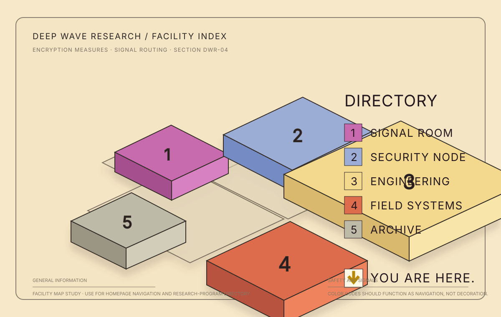
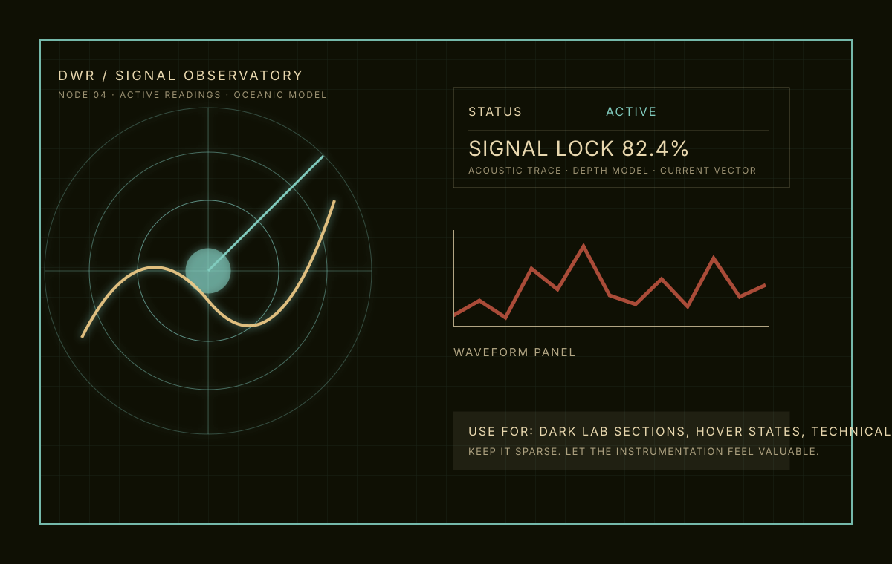
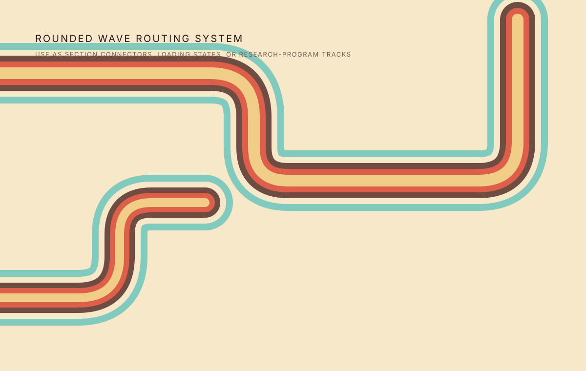
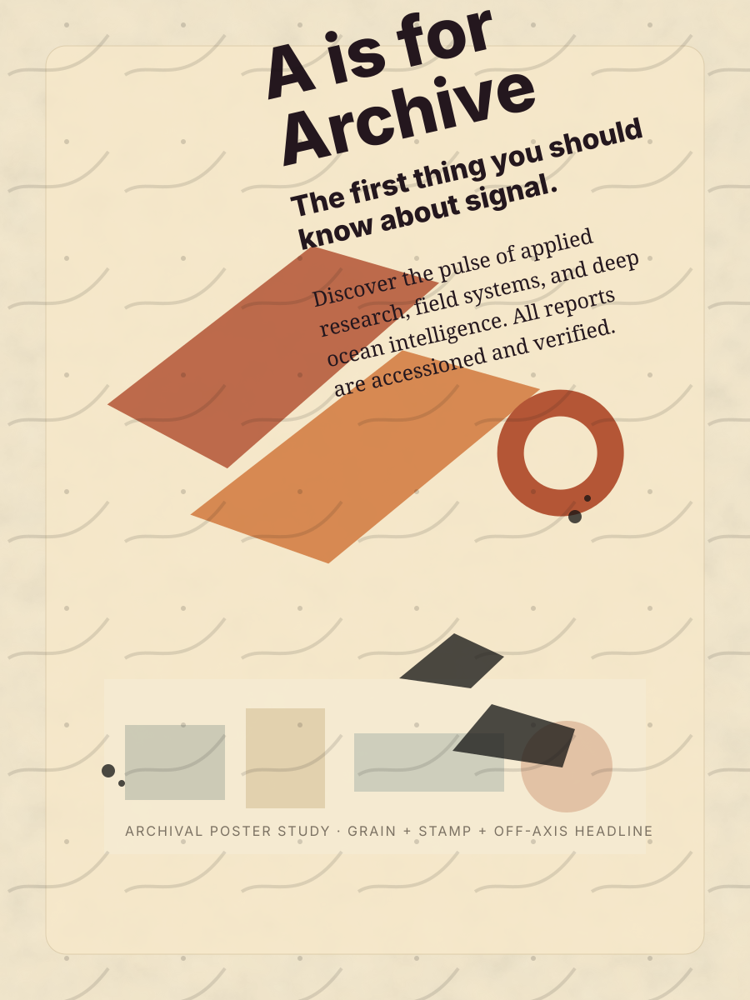
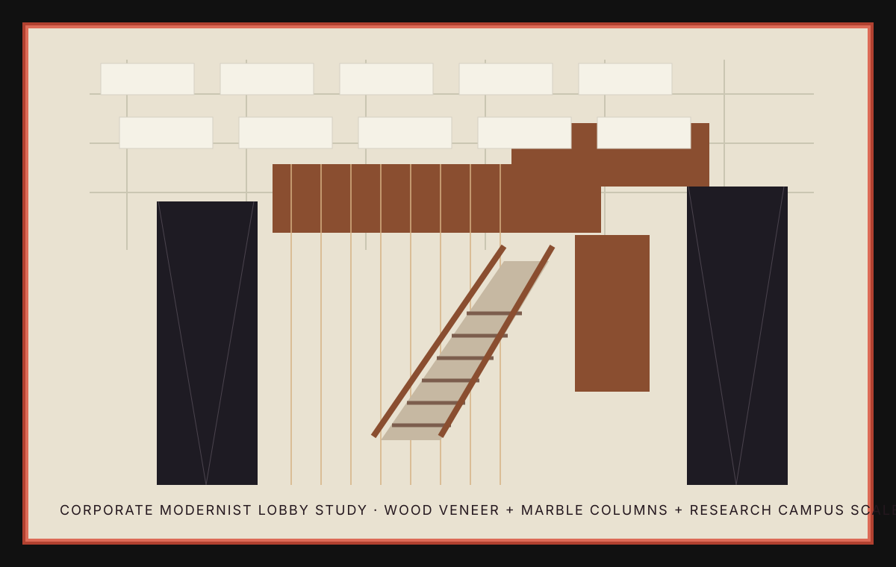

DWR / OCEAN SIGNAL INTELLIGENCE
Signal systems for complex ocean environments.
Deep Wave Research develops models, instruments, and field intelligence for wave energy, deep-current behavior, offshore infrastructure, and long-horizon climate systems.
01 / RESEARCH PROGRAMS
Organized like a facility, operated like a field lab.
Each program is a navigable node with its own methods, datasets, and field systems. Hover the map or cards to synchronize the active research area.
02 / SIGNAL LAB
Instrument UI for model traces, sonar returns, and live array status.
The dark mode is reserved for dense technical moments: a controlled room in the site where signals, anomalies, and confidence intervals feel physical.
Request a briefing03 / FIELD SYSTEMS
Field arrays, buoy telemetry, and coastal instrument networks.
Warm technical diagrams sit beside corporate-modernist panels: operational enough to trust, cinematic enough to remember.



04 / CURRENT MODELS
Forecast layers, revision control, and drift windows for changing water systems.
Current Models is where instrument telemetry and long-horizon climate behavior are reconciled before they become public guidance, field deployment changes, or archive-grade records.
05 / PUBLICATIONS
Reports with accession numbers, field notes, and model revisions.

06 / ARCHIVE
Declassified field materials, old diagrams, and verified model lineage.
Distress is used selectively here so the rest of the website stays clean and credible. The archive gives Deep Wave a sense of institutional memory.

07 / INSTITUTIONAL PROFILE
Quiet authority, exact language, and systems that feel built.
The draft combines mid-century research-campus calm with analog sci-fi detail: grids, warm materials, map logic, instrument UI, and restrained editorial type.
- Mode
- Retro-modern oceanic research terminal
- Palette
- Archive cream, deep umber, aqua trace, signal coral
- Motif
- Rounded signal-routing paths
08 / RECEPTION DESK
Open a secure research channel.
For field collaborations, model releases, publication inquiries, or instrument-system briefings.